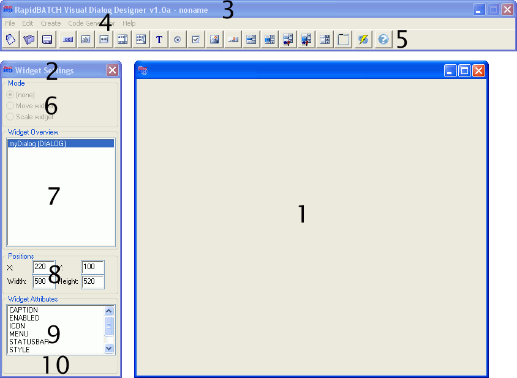

The GUI's structure
The Visual Dialog Designer's look&feel was copied from modern RAD-development environments, providing an easy to use, well structured application. So first of all, this part describes the general structure of the development tool.
Structure of the Visual Dialog Designers
RapidBATCH Visual Dialog Designer's user interface exists of three application-windows, the designer-window (1) where the dialog is designed and widgets can be inserted and edited, the widget-editor (2), where widget-specific settings and attributes can be set and performed, and the operation-window (3) on the top, where all program-specific operations can be selected.
By selecting the corresponding item from the menubar (4) or the corresponding button from the toolbar (5), dialogs can be created, opened and saved, new widgets can be inserted and the code-generator can be opened.
To move or scale widgets with the mouse, select the desired mode from the mode-area of the widget-editor (6). This area is only active when a child-widget is selected as current widget from the widget-list (7), that can be moved or scaled on the designer-window. The type of the different widgets is always displayed in brackets behind the widget-name. All widgets displayed in the widget-list are displayed in the order they are created. This order can be changed by using the function "Change widget order" from the edit-menu in the menubar.
If a widget is selected from the widget-list, the attributes displayed in the attribute-list (9) are automatically updated, so that only attributes supported by the currently selected widget can be modified or changed. X- and Y-coordinates as well as the width and the height of the selected widget can also be seen and modified in the coordinate-information area (8).
If an attribute of a widget is selected, a corresponding input-possibility for the attribute automatically appears in the attribute-value area (10). When changing attribute-values, they are directly updated in the designer window on-line.
Same does also apply to the coordinate-information area: When entering new coordinate values into the particular input-field, the changes take effect on-line while editing them.
The following list provides a short overview over the functions which can be accessed over the Visual Dialog Designer's menu bar. - File
The file-menu provides all functions for managing dialog-files. Using this menu, a new dialog can be created, and existing dialog can be opened and the current dialog can be saved. - Edit
This menu provides widget-specific editing functions. The currently selected item from the item-list can be deleted, renamed or duplicated using these functions. Also, the event-editor can be accessed using the item "Events...", where the supported events of the currently selected widget can be switched on or off.
By using the function "Change widget order", the creation order of the different child-widgets can be changed, so that a creation order - also for later inserted widgets - can be defined, by moving the widget to the desired position in the widget-list. - Insert
From this menu, new widgets can be inserted. The menu is equivalent to the toolbar below the menubar, where widgets can also be created from. - Code Generator
This menu-item opens the Code Generator's options dialog. - Hilfe
Using this menu, the Visual Dialog Designer's User Manual can be opened and futher information can be accessed.
Copyright © 2000-2006 by J.M.K S.F. Software Technologies, Jan Max Meyer
All rights reserved.